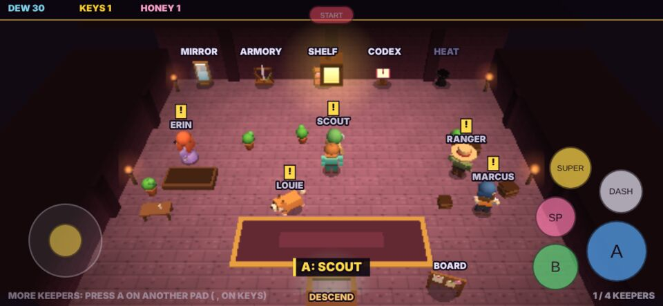
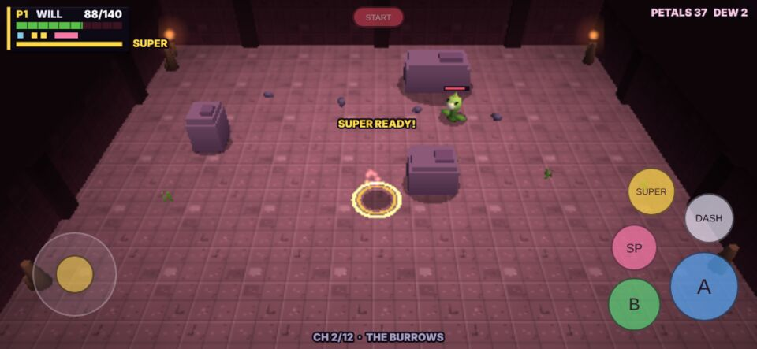
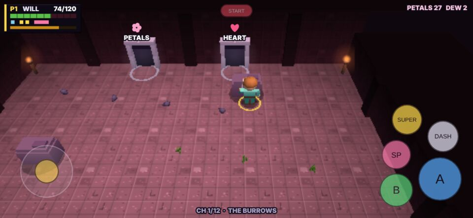
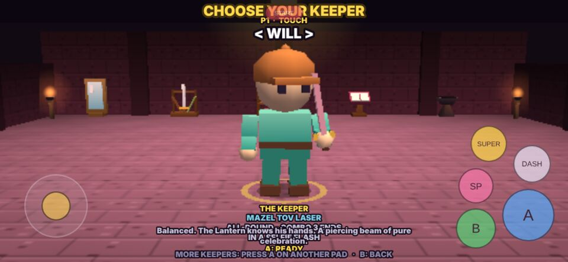
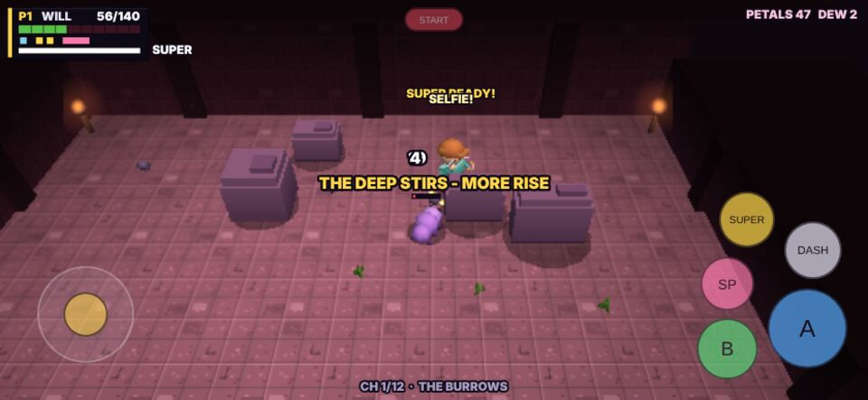
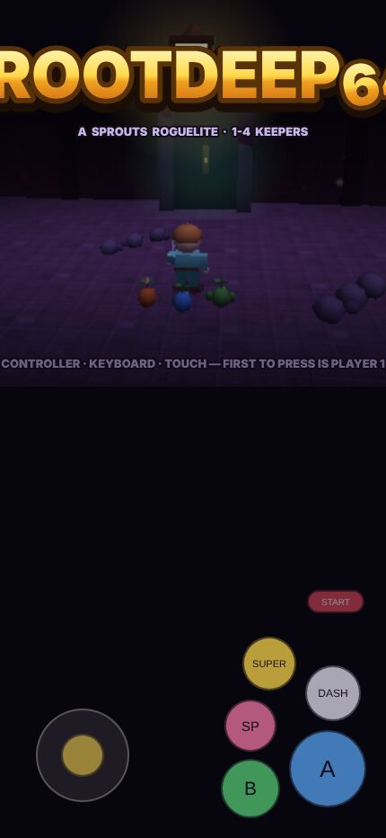

<title>Cartridge Club: Rootdeep 64</title>
<meta name="claude:viewport-fit-sides" content="cover">
<meta name="description" content="Dana&#x27;s phone review of Rootdeep 64">
<link rel="preconnect" href="https://fonts.googleapis.com"><link rel="preconnect" href="https://fonts.gstatic.com" crossorigin>
<link rel="stylesheet" href="https://fonts.googleapis.com/css2?family=Luckiest+Guy&family=Nunito:ital,wght@0,400;0,700;0,800;1,400&display=swap">
<style>
*,*::before,*::after{box-sizing:border-box}
img{display:block;max-width:100%;height:auto}
.shot{margin:0}
.wrap{max-width:1080px;margin:0 auto;padding-left:max(16px,env(safe-area-inset-left,0px));padding-right:max(16px,env(safe-area-inset-right,0px))}
h1,h2,h3{text-wrap:balance}
:focus-visible{outline:3px solid currentColor;outline-offset:2px}

:root{--paper:#fffaf0;--ink:#24203a;--sky:#1f6fd6;--sun:#ffc626;--berry:#e8314f;--leaf:#2f9e4f;--soft:#f1e9d8;--mute:#6c6580;color-scheme:light}
body{background:var(--paper);color:var(--ink);font:17px/1.6 "Nunito",system-ui,sans-serif}
.mast{background:var(--sky);color:#fff;border-bottom:6px solid var(--sun)}
.mast .wrap{display:flex;flex-wrap:wrap;gap:6px 18px;align-items:baseline;justify-content:space-between;padding-block:14px}
.logo{font:400 clamp(30px,6vw,52px)/1 "Luckiest Guy",cursive;letter-spacing:1px;color:var(--sun);text-shadow:3px 3px 0 var(--berry)}
.issue{font-weight:800;font-size:13px;letter-spacing:.12em;text-transform:uppercase}
.kicker{display:inline-block;background:var(--berry);color:#fff;font:400 18px/1 "Luckiest Guy",cursive;letter-spacing:1px;padding:8px 14px 5px;border-radius:999px;transform:rotate(-2deg);margin-top:28px}
.hero h1{font:400 clamp(44px,9vw,96px)/.95 "Luckiest Guy",cursive;margin:14px 0 6px;color:var(--sky);text-shadow:4px 4px 0 var(--sun)}
.hero h2{font:800 clamp(22px,3.4vw,32px)/1.2 "Nunito",sans-serif;margin:0 0 10px}
.deck{font-size:19px;font-style:italic;color:var(--mute);max-width:62ch;margin:0}
.by{display:flex;gap:12px;align-items:center;margin:18px 0 26px;font-weight:700}
.av{width:46px;height:46px;border-radius:50%;background:var(--sun);display:grid;place-items:center;font:400 24px "Luckiest Guy",cursive;color:var(--berry);border:3px solid var(--ink)}
.by small{display:block;font-weight:400;color:var(--mute)}
.grid{display:grid;grid-template-columns:minmax(0,1fr) 320px;gap:40px;align-items:start;padding-bottom:40px}
.body p{margin:0 0 1em;max-width:66ch}
.body p:first-of-type::first-letter{font:400 64px/.8 "Luckiest Guy",cursive;float:left;margin:8px 8px 0 0;color:var(--berry)}
.body h3{font:400 26px/1.1 "Luckiest Guy",cursive;color:var(--berry);letter-spacing:.5px;margin:28px 0 10px}
.shot{background:#fff;border:3px solid var(--ink);border-radius:14px;padding:8px;margin:22px 0;box-shadow:6px 6px 0 var(--sun);transform:rotate(-.6deg)}
.shot:nth-of-type(even){transform:rotate(.6deg);box-shadow:-6px 6px 0 var(--sky)}
.shot img{border-radius:8px}
.shot figcaption{font-size:14px;padding:8px 4px 2px;color:var(--mute)}
.side{display:flex;flex-direction:column;gap:22px;position:sticky;top:16px}
.box{border:3px solid var(--ink);border-radius:16px;background:#fff;overflow:hidden}
.box h4{margin:0;background:var(--ink);color:var(--sun);font:400 22px/1 "Luckiest Guy",cursive;letter-spacing:1px;padding:12px 16px 9px}
.mrow{display:flex;gap:10px;justify-content:space-between;padding:10px 16px;border-top:2px dashed var(--soft)}
.ml b{display:block;font-size:15px}.ml span{display:block;font-size:12.5px;color:var(--mute);line-height:1.35}
.mv{text-align:right;white-space:nowrap}.mv em{display:block;font-style:normal;font-weight:800}
.st{display:inline-block;width:15px;height:15px;margin-left:2px;clip-path:polygon(50% 0,61% 35%,98% 35%,68% 57%,79% 91%,50% 70%,21% 91%,32% 57%,2% 35%,39% 35%);background:var(--soft)}
.st.f{background:var(--sun)}.st.h{background:linear-gradient(90deg,var(--sun) 50%,var(--soft) 50%)}
.overall{display:flex;align-items:center;justify-content:space-between;padding:14px 16px;background:var(--sun);font-weight:800}
.overall big{font:400 38px/1 "Luckiest Guy",cursive;color:var(--berry)}
.verdict{padding:14px 16px;font-size:15px;margin:0}
.pc{display:grid;grid-template-columns:1fr 1fr;gap:0}.pc div{padding:12px 16px}.pc h5{margin:0 0 6px;font:400 18px "Luckiest Guy",cursive}
.pc ul{margin:0;padding-left:18px;font-size:14px;line-height:1.45}.pc li{margin-bottom:6px}
.pro h5{color:var(--leaf)}.con h5{color:var(--berry)}.con{border-left:2px dashed var(--soft)}
.pull{margin:30px 0;padding:22px 24px;background:var(--berry);color:#fff;border-radius:20px;font:400 clamp(24px,3.6vw,34px)/1.15 "Luckiest Guy",cursive;letter-spacing:.5px;position:relative}
.pull::after{content:"";position:absolute;left:40px;bottom:-18px;border:18px solid transparent;border-top-color:var(--berry);border-bottom:0}
.pull cite{display:block;font:700 14px "Nunito",sans-serif;margin-top:10px;letter-spacing:.06em;text-transform:uppercase}
.tips{background:var(--leaf);color:#fff;border-radius:18px;padding:18px 20px 8px;border:3px solid var(--ink)}
.tips h4{font:400 24px "Luckiest Guy",cursive;margin:0 0 8px;color:var(--sun)}
.tips ol{padding-left:20px;margin:0;font-size:15px}.tips li{margin-bottom:10px}
.phone{display:grid;grid-template-columns:140px 1fr;gap:14px;align-items:center;background:#fff;border:3px solid var(--ink);border-radius:16px;padding:12px}
.phone img{border-radius:12px;border:4px solid var(--ink)}.phone p{margin:0;font-size:14px;color:var(--mute)}
.errata{border:3px dashed var(--mute);border-radius:14px;padding:14px 18px;background:var(--soft);font-size:14.5px}
.errata h4{margin:0 0 4px;font:400 20px "Luckiest Guy",cursive;color:var(--ink)}.errata .eh{margin:0 0 6px;color:var(--mute)}.errata ul{margin:0;padding-left:18px}
footer{border-top:6px solid var(--sun);background:var(--ink);color:var(--soft);font-size:13px}footer .wrap{padding-block:16px}
@media (max-width:860px){.grid{grid-template-columns:1fr}.side{position:static}}
@media (max-width:420px){.pc{grid-template-columns:1fr}.con{border-left:0;border-top:2px dashed var(--soft)}.phone{grid-template-columns:100px 1fr}}
@media (prefers-reduced-motion:reduce){.shot,.kicker{transform:none!important}}

</style>
<header class="mast"><div class="wrap"><span class="logo">CARTRIDGE CLUB</span><span class="issue">The family game monthly · Phone edition</span></div></header>
<main class="wrap">
<section class="hero"><span class="kicker">NOW PLAYING</span>
<h1>Rootdeep 64</h1><h2>Cozy on the Surface, Brutal Underneath</h2>
<p class="deck">A family digs into the dark under their house to rescue a lantern, and the grubs down there play for keeps. We took it into the basement on a phone, died sixteen times, and came back up with plenty to say.</p>
<div class="by"><span class="av" aria-hidden="true">D</span><div>Review by Dana<small>Plays Mario Kart and Animal Crossing. Played on a phone, with her thumbs.</small></div></div></section>
<div class="grid"><article class="body">
<p>Here's how ROOTDEEP 64 opens: two kids, a lantern that won't stay lit, a basement floor that gives way, and a little underground room called the Hearth where your whole family hangs around between expeditions. Erin is minding the potatoes ("they're complaining"), Marcus tells you he'd already told everyone you were dead, and a dog named Louie trots around getting under your feet. It's warm and funny and drawn in chunky, clay-like blocks that look great on a phone screen. I liked these people right away.</p>

<p>Then you walk onto the trapdoor marked DESCEND, and the game shows you its other side.</p>

<figure class="shot "><figcaption>The Hearth, where the family hangs out between trips. Those yellow <strong>!</strong> marks mean somebody has a job for you.</figcaption></figure>
<h3>Down in the Burrows</h3>

<p>You're dropped into small square rooms full of crates, and they fill up with bugs: little purple grubs that crawl right on top of you, sprouts that run off and spit seeds from across the room, and big brown beetles that charge for 25 to 35 damage a hit. You get a sword on A, a magic shot on B, a dash, an SP button (it turned out to be a "Selfie Flash" that sometimes heals you, which I only found by pressing it), and a SUPER that fills up as you fight. My Super was "Bike Lane," and seeing Will ride straight through a pile of grubs on his bike was the most fun I had all session.</p>

<figure class="shot "><figcaption>Where's Will? For a moment after a hit, only his gold ring is left on the floor.</figcaption></figure>
<p>Clear a room and two doors open, each with a picture on it showing your prize: a Fountain to heal, a Shop, a Heart for more max health, or a "boon" from one of the spirits down there (Leaf, Dew, Peb). Boons are things like "Attack +30%" or "Heal 5 after each chamber." Picking doors is a nice little decision, and the spirits' one-liners ("Every drop in the Vault used to be a morning") are lovely.</p>

<p>When you die, and you will, you're sent back up to the Hearth with your Moondew. You spend it at the Mirror on permanent upgrades like +10 max health, then you go back down. Die, upgrade, try again. A game where losing is part of the plan was new to me, and I could feel how it's supposed to work: each trip down, you get a little bit stronger.</p>

<figure class="shot "><figcaption>Pick a door by the prize on it. Here: Petals or a Heart.</figcaption></figure>
<h3>The floor I couldn't get past</h3>

<p>The screen says CH 1/12. I played sixteen runs in about an hour and never once got past chamber 3. Seven of those runs ended in the chamber 3 "elite" room. Twice I died in the very first room. Enemies kept spawning right where I arrived. In one run a beetle was sitting on my starting spot before I could even move, and my buddy Peb shouted "PEB BLOCKED!" on the first frame. A Mario Kart player like me needs a fair start, and this game doesn't always give you one.</p>

<figure class="shot "><figcaption>The keeper select screen, where the words pile up on each other.</figcaption></figure>
<p>Worse, I often couldn't tell what was hurting me. Grubs pile on top of your hero, and for a split second now and then Will disappears completely, leaving only his gold ring on the floor. My health bar just drained away. I did get better. Standing back and firing B at things roughly doubled how long I lived. But nothing told me to fight that way, and the Settings menu offers only volume and screen shake, with no easier mode.</p>

<h3>Touch controls: almost there</h3>

<figure class="shot "><figcaption>"SUPER READY!", "SELFIE!" and "THE DEEP STIRS" all land in one spot.</figcaption></figure>
<p>The on-screen stick and the big blue A button feel good, and you can move and attack at the same time with two thumbs. The trouble starts back in the Hearth. Everyone wanders around, and the "Press A" prompt jumps to whoever is closest. I meant to talk to Erin and kept getting Louie the dog or the planter box next to her. The camera also turns as you walk, so pushing "up" doesn't always take you up, and lining up with a doorway that has a crate parked in front of it took me three tries more than once. The pause menu lives behind the tiny START pill at the top of the screen, which I didn't find for 45 minutes. When I did, it listed keyboard keys ("Z · X · C · V · SHIFT") for a game I was playing with my thumbs.</p>

<p>Words pile up on each other too. The character-select screen prints its descriptions over one another until they're unreadable, the "NEW MISSION" banner covers the menu labels, and in one fight "THE DEEP STIRS," "SUPER READY!" and "SELFIE!" all landed in the same spot at once. I tried holding the phone upright, and the game shrank to a strip across the top with the title cut off at both edges. Play it sideways.</p>

<h3>Sound</h3>

<p>I can't tell you how it sounds. My review copy ran with the audio off, so I heard nothing. The Settings screen promises "the lantern hum, low under everything," and I'd love to hear it.</p>

<h3>Bottom line</h3>

<p>There's a sweet, funny, good-looking game in here, with a family you'll want to visit and notes in the dark that made me say "aww" ("They aren't angry. They're in the dark with nothing to eat, and they have children."). For a newcomer on a phone, though, the first three rooms are a wall, and the game doesn't explain how to get over it. Experienced players who like starting over again and again might lap it up. Everyone else should wait for an easy mode and a cleaner screen.</p>
<blockquote class="pull">There's a sweet, funny game in here. On a phone, its first three rooms are a wall.<cite>Dana</cite></blockquote>
</article>
<aside class="side">
<div class="box"><h4>Play-O-Meter</h4><div class="mrow"><div class="ml"><b>Graphics &amp; Sound</b><span>Lovely clay-block look and cozy lighting; messy overlapping text; sound not heard</span></div><div class="mv"><span class="st f"></span><span class="st f"></span><span class="st f"></span><span class="st h"></span><span class="st e"></span><em>3.5</em></div></div><div class="mrow"><div class="ml"><b>Play Control</b><span>Stick and A button feel good; hub targeting, camera turning and crowded doorways fight you</span></div><div class="mv"><span class="st f"></span><span class="st f"></span><span class="st h"></span><span class="st e"></span><span class="st e"></span><em>2.5</em></div></div><div class="mrow"><div class="ml"><b>Challenge</b><span>Far too steep for beginners; spawns land on you; never got past room 3 of 12</span></div><div class="mv"><span class="st f"></span><span class="st h"></span><span class="st e"></span><span class="st e"></span><span class="st e"></span><em>1.5</em></div></div><div class="mrow"><div class="ml"><b>Theme &amp; Fun</b><span>Charming family, great writing, the Bike Lane super is a blast</span></div><div class="mv"><span class="st f"></span><span class="st f"></span><span class="st f"></span><span class="st h"></span><span class="st e"></span><em>3.5</em></div></div><div class="overall"><span>Overall</span><big>2.8 / 5</big></div>
<p class="verdict"><strong>Verdict:</strong> A cozy, clever little world with a mean streak. Worth a peek for the story and the style. Casual players will bounce off chamber 3 until it gets an easier mode and clearer screens.</p></div>
<div class="box pc"><div class="pro"><h5>Thumbs up</h5><ul><li>Charming characters and real heart in the writing (Erin, Marcus, the "Root-Scratched Notes")</li><li>Chunky, colourful 3D look that reads well on a small screen</li><li>Choosing a door by the prize pictured on it is simple and fun</li><li>SUPER moves like "Bike Lane" feel great</li><li>Permanent upgrades at the Mirror mean every death counts for something</li><li>Two-thumb touch controls (move plus attack) work</li></ul></div><div class="con"><h5>Thumbs down</h5><ul><li>Way too hard, way too early: 16 runs, best was chamber 3 of 12</li><li>Enemies spawn on top of you when you enter a room</li><li>Your hero sometimes vanishes, leaving just a ring on the floor</li><li>Hub "Press A" targets the wrong person (or the dog, or the planter)</li><li>On-screen text overlaps all over the place, especially on character select</li><li>Pause menu hidden behind a tiny START pill and shows keyboard keys to phone players</li><li>Portrait mode cuts off the title and squashes the game</li><li>Crates parked in front of reward doors</li></ul></div></div>
<div class="phone"><p><strong>Hold it sideways.</strong> Upright, the game shrinks to a strip across the top and the title gets cut off.</p></div>
<div class="tips"><h4>Dana's Dirt-Digging Tips</h4><ol><li><strong>Shoot, don't stab.</strong> Fire B at bugs from across the room. Running in with the sword got me eaten by grubs.</li><li><strong>Press SP when you're hurt.</strong> The Selfie Flash healed me +10 a few times, mostly with enemies nearby.</li><li><strong>Save SUPER for a crowd.</strong> The gold button wipes out a pile of grubs. It only works when the bar under your health says SUPER.</li><li><strong>Pick the Fountain or Heart doors when you're low.</strong> The Heart healed me 25 and raised my max health too.</li><li><strong>Vitality first at the Mirror.</strong> +10 health per rank. Golden Touch and Mending gave me very little.</li><li><strong>The pause menu is real!</strong> Tap the little red START pill at the top <em>during a run</em>. In the Hearth, that same pill gives honey to whoever you're standing next to.</li><li><strong>Stand still before you press A in the Hearth.</strong> Otherwise you'll end up petting Louie.</li></ol></div>
<aside class="errata"><h4>Errata</h4><p class="eh">Dana read the game's code after filing this review. These claims did not hold up:</p><ul><li>Tip #2 is wrong: the SP button (Selfie Flash) doesn't heal. The +10s were heart pickups that enemies drop.</li><li>A beetle hit is about 12 damage, not 25 to 35. Several enemies were landing hits at once.</li><li>The camera doesn't turn; it slides and leans toward you.</li><li>"( , ON KEYS)" isn't missing a key. It's the comma key, for a second keyboard player.</li></ul></aside>
</aside></div></main>
<footer><div class="wrap">Cartridge Club is a made-up magazine for this playtest. Dana is a reviewer persona who played the real build, blind, for about 50 minutes on a simulated phone. Sound wasn't heard.</div></footer>
